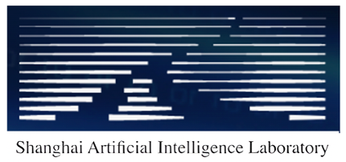

Sitong Wu | 吴思彤 PhD (3rd Year)Department of Computer Science and Engineering The Chinese University of Hong Kong (CUHK) Email: stone-wu@link.cuhk.edu.hk |
|
Biography
I am currently a 3rd year PhD student at Computer Science & Engineering Department, The Chinese University of Hong Kong (CUHK), under the supervision of Prof. Jiaya Jia. Before that, I got the Bachelor degree in Information Engineering at Jilin University (JLU).
My current research revolves around efficient and data-centric AI, particularly exploring their applications in current hot topics, such as large language models, multi-modality models, and generative models.
Selected Publications [Google Scholar]
*: equal contribution | Click a research direction to expand / collapse.
Expand all Collapse all
LLM & Agent10
Multi-Modality5
Data-Centric3
Computer Vision4
Experiences
| Baidu Research (2021 - 2022) Research Internship | Supervisor: Prof. Guodong Guo and Dr. Jingdong Wang |
|
 |
Shanghai AI Laboratory (2022) Research Internship | Supervisor: Dr. Xiaowei Hu and Prof. Jifeng Dai |
| Alibaba Damo Academy (2023) Research Internship | Supervisor: Dr. Fan Wang |
Honors and Awards
- Postgraduate Scholarship, CUHK (2023-2027)
- Outstanding Internship Award, Baidu Research (2021)
- National Scholarship, China (2018)
- Outstanding Student, Jilin University (2016 - 2019)
- First Class Scholarship, Jilin University (2015 - 2019)
- Gold Medal, Kaggle Competition (2020)